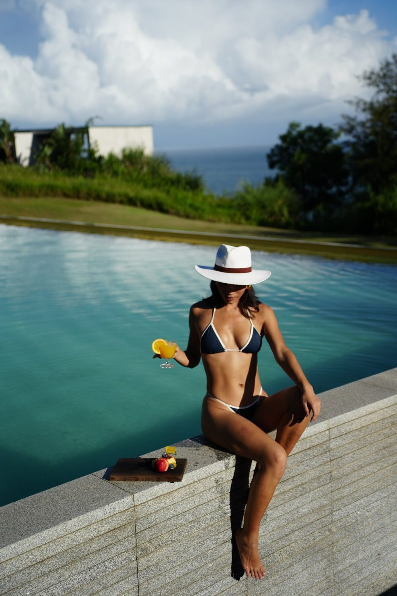
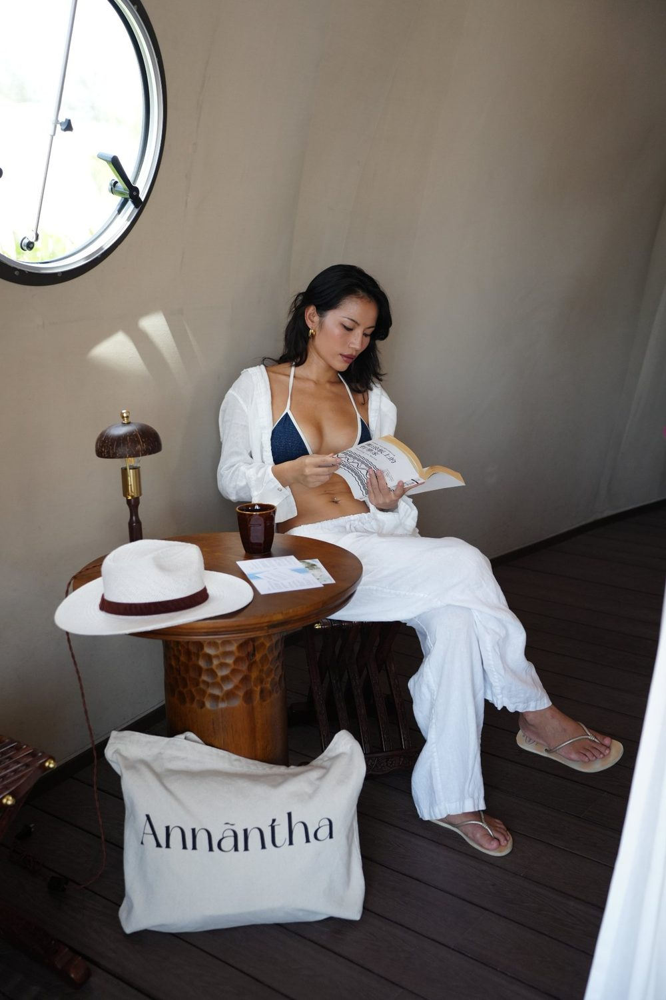
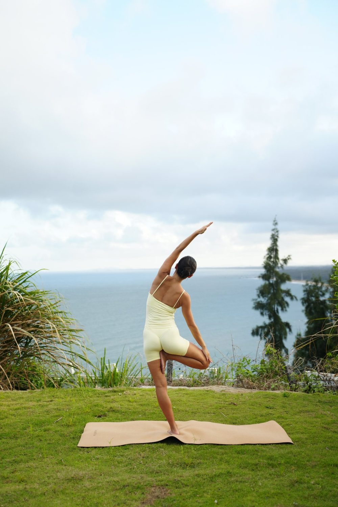

万宁的海不是安静的那种。它一整夜都在响，浪打在崖壁上， 声音从底下传上来，带着一点低鸣。第一晚你会觉得吵，第二晚它变成了白噪音， 第三晚回家，你反而会因为太安静而睡不着。
台风之后的海崖
我们赶上的这一趟，是台风过境后的第四天。海还没完全平下来， 浪比平时高，颜色偏黄——那是被搅起来的沙。
这种时候不适合下水，但适合看。风把云推得很快， 十分钟里天空能换三四种颜色。站在崖边，能感觉到空气在推你。

台风季出行务必先确认海况与开放状态。风大时不建议靠近崖边护栏以外的区域。
观海天际舱：把窗做到最大
天际舱的核心不是帐篷，是那面朝海的玻璃。白天它是一幅画， 傍晚它变成一盏灯，晚上你把灯关掉，它就只剩下外面的月光和浪。
房间不大，但布局诚实：床正对海，浴室在侧后方。 要注意的是，部分房型的浴缸外面看到的是丛林而不是海—— 如果你是为了泡澡看海去的，订之前一定要跟前台确认清楚。

毛毛虫帐篷：更野一点的选择
如果想要更接近地面的体验，选帐篷。它离海更近， 隔音基本没有，所以浪声是真的在耳边。
代价是：潮湿、虫子、清晨五点被光叫醒。 换来的是半夜拉开帐篷拉链，能看到没有遮挡的天。
舒适和体验之间永远有个交换比，帐篷季买的就是后者。
两天一晚怎么安排
- 第一天下午：入住，先在房间待着，等光线变低再去崖边。
- 傍晚：崖边散步，台风后的浪适合看，不适合下水。
- 晚上：不要安排活动。帐篷季的夜晚本身就是行程。
- 第二天清晨：六点前起来一趟，海面的颜色只在那个时段出现。
- 上午：早饭后沿海边公路走走，十点之后阳光就开始硬了。

"帐篷季"这个名字听起来像活动，其实是一种住法。 它适合那些不需要被安排满的假期——你只需要一个能听见海的地方， 和一段愿意什么都不做的时间。